AirHorizon: Attitude Indicator
Flight HUD for iPhone & iPad
AirHorizon turns your iPhone or iPad into a real-time artificial horizon: pitch, roll, heading tape, ground speed and altitude in one clear head-up display. Run it on the device's own sensors, or feed it live telemetry from X-Plane 11 and 12 over your local network.
Everything on one screen
A HUD-style layout built to be readable at a glance — in daylight, at night, and in motion.
Real-time pitch & roll
A live artificial horizon driven by the device motion sensors, with one-tap pitch and roll calibration for however your device is mounted.
Speed & altitude tapes
Ground speed in knots and altitude in feet on classic vertical tapes, from the device's location and barometric sensors, or from your simulator.
Heading tape with markers
Mark any heading with a single tap and hold your reference. Off-screen cue arrows point back to a marker that has drifted out of view.
Director mode
Flight director guidance bars rendered from the simulator's own autopilot and flight-director data, so the cue you follow matches the aircraft.
Night vision HUD
A low-emission night palette with adjustable HUD and ground contrast, so the display stays readable without wrecking your dark adaptation.
Tunable pitch ladder
Set the portrait pitch-ladder width to taste, keep the layout smooth with auto smoothing, and run the same display on iPhone or iPad.
See it in the cockpit
Swipe through the display modes.
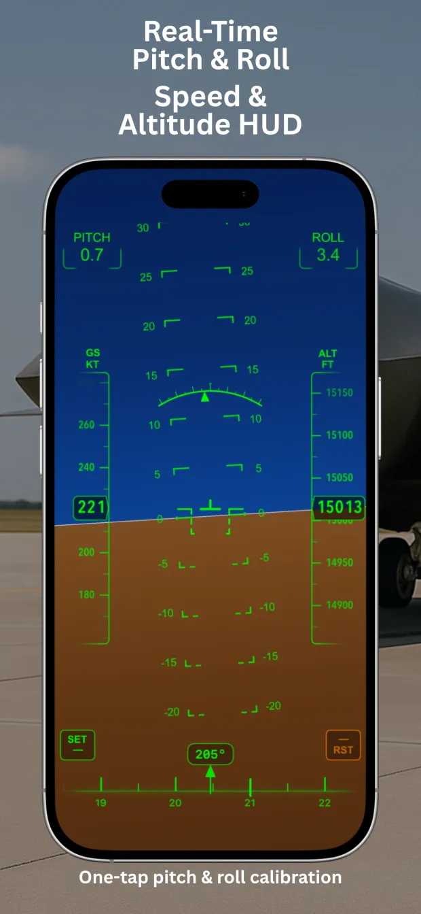
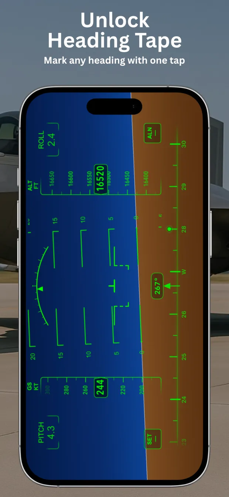
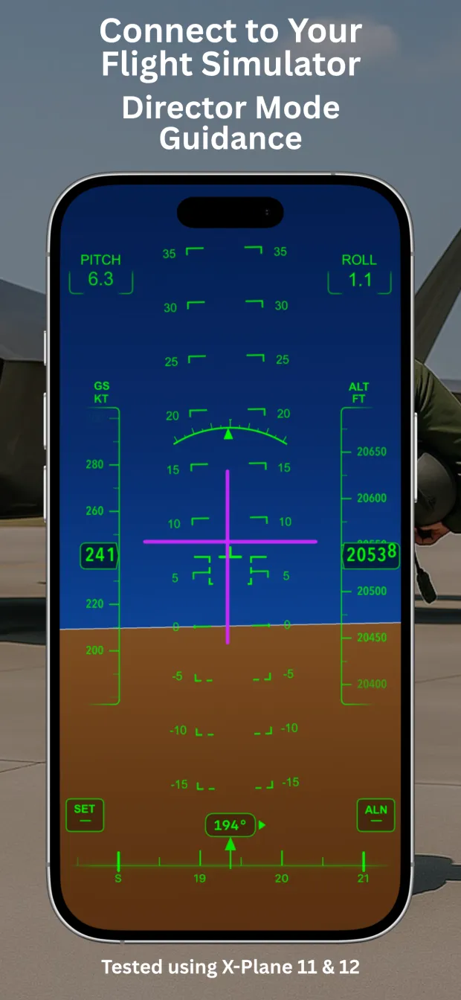
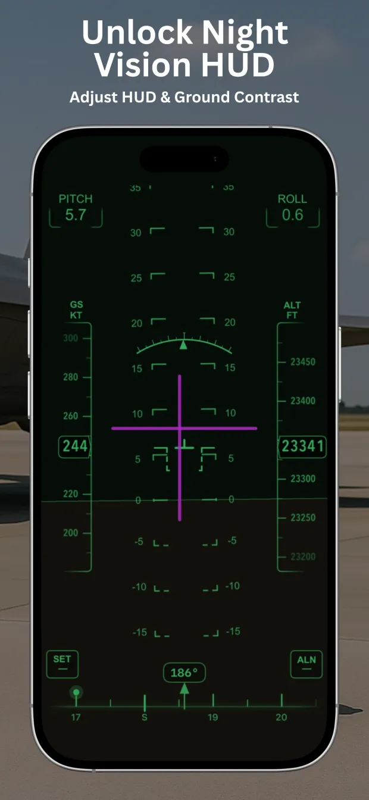
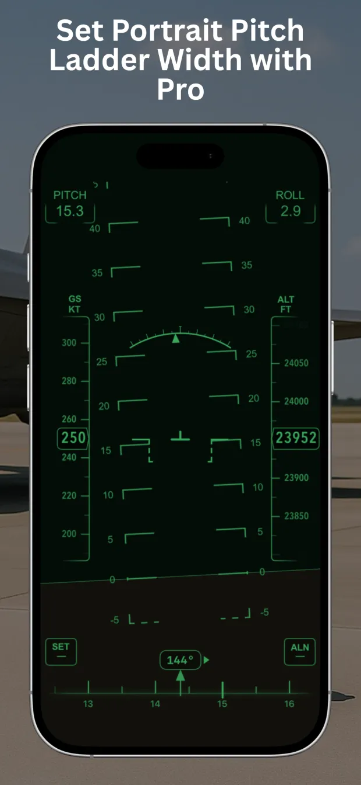
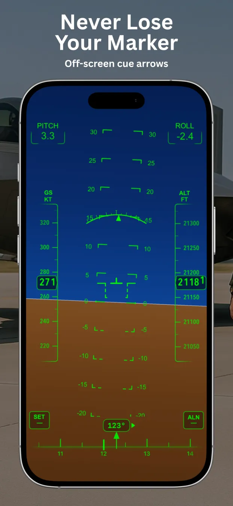
The same instrument, on a bigger panel
AirHorizon is a universal app — one free download that runs natively on iPhone and iPad, with no separate version to buy. On an iPad the horizon, the pitch ladder and the speed and altitude tapes get room to breathe, which makes the display readable from further away: useful when the tablet sits on a desk next to your simulator rig rather than in your hand.
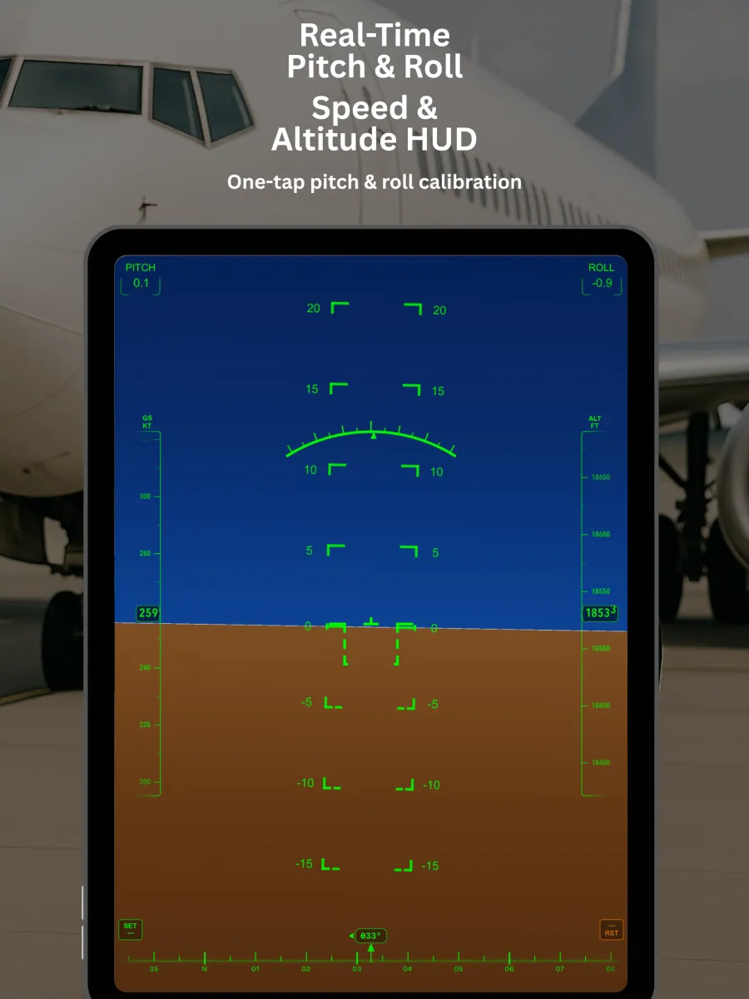
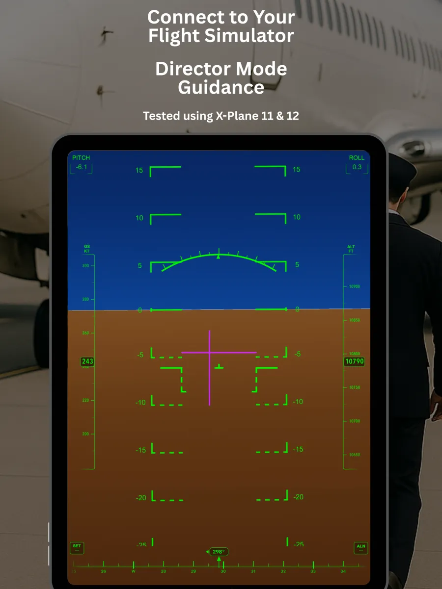
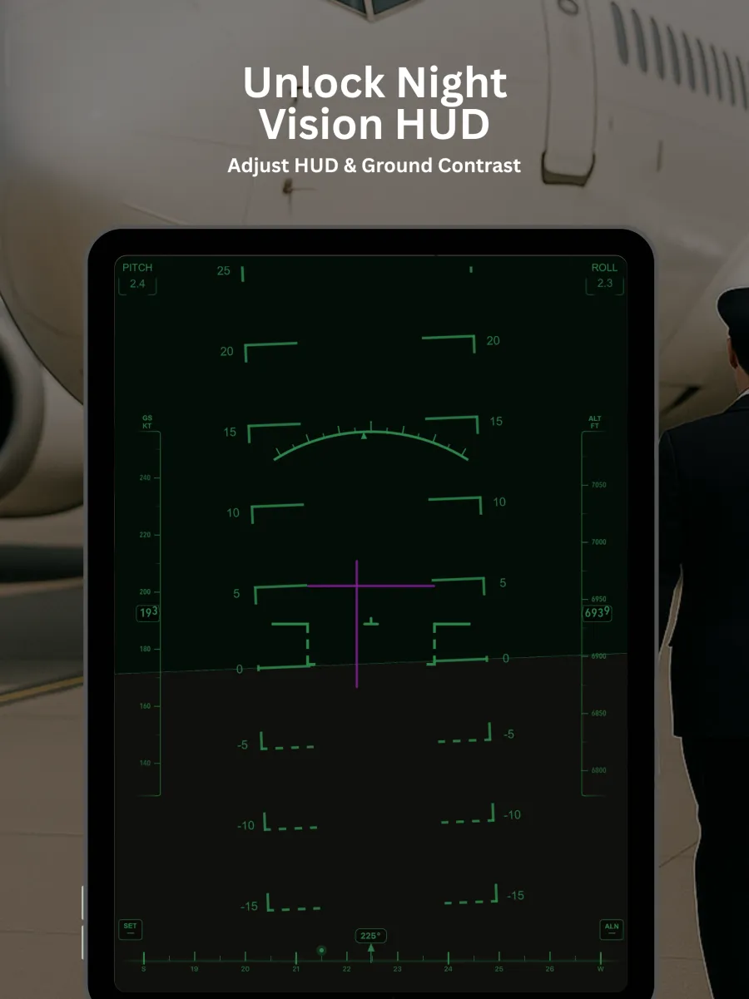
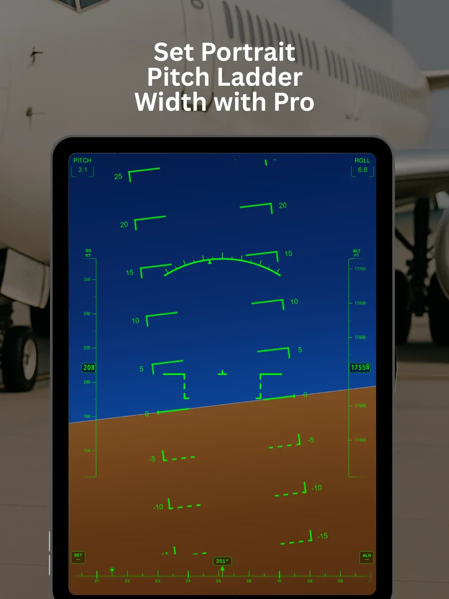
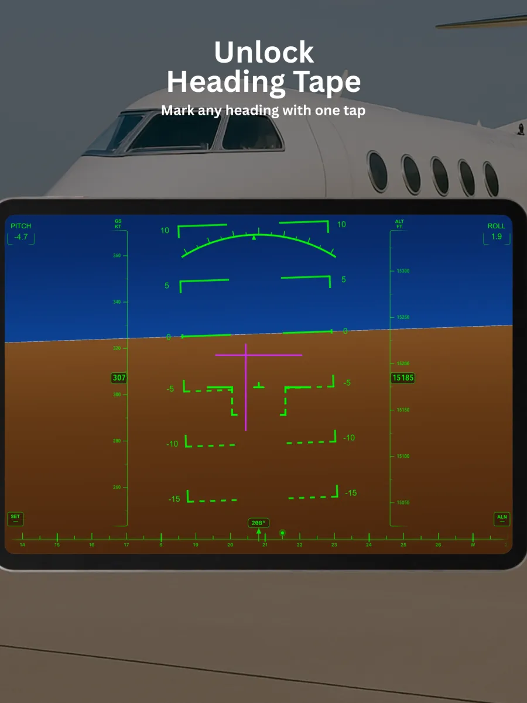
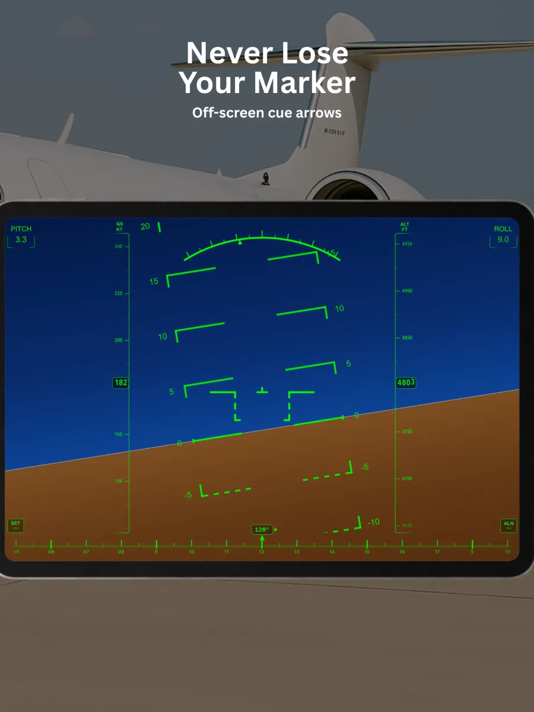
Everything on this page works the same way on both devices, including the X-Plane connection — the setup steps are identical, you just enter the iPad's IP address instead.
Connect AirHorizon to X-Plane 11 & 12
No plugin, no extra software. X-Plane already knows how to broadcast its data over the network —
AirHorizon listens for those packets on UDP port 49000 and flies the display from them.
Tested with X-Plane 11 and X-Plane 12.
Same network
Put your iPhone or iPad and the simulator computer on the same Wi-Fi network. Find the device IP under Settings › Wi-Fi › network info › IP Address.
Data output in X-Plane
Open the network / data output settings, enable UDP data output, enter the device IP address
and set the port to 49000.
Pick your sources
Allow Local Network access when iOS asks, then in Settings › External Source choose which signals come from the simulator — or switch everything at once.
Data output rows to enable
Tick network UDP output for these groups. AirHorizon reads standard X-Plane DATA units.
| Row | Group | What AirHorizon takes from it |
|---|---|---|
3 | Speeds | Ground speed in knots |
17 | Pitch, roll, headings | Pitch, roll and heading in degrees |
20 | Latitude, longitude, altitude | Altitude MSL in feet |
108 | Autopilot, flight director, HUD | Flight director mode, pitch and roll — used by Director Mode |
Nothing showing up? Re-check the IP address, confirm the port is 49000, and make sure
network via UDP is ticked for every row. A VPN, a guest network, or router client isolation will block local
UDP traffic. Some simulator builds expose flight-director data under a neighbouring row number.
AirHorizon in action
Short clips from the simulator and from the real world.
X-Plane 12 — altitude, speed and Director Mode live
Helicopter over Rio de Janeiro, past Christ the Redeemer
Airliner passenger seat — watching altitude and speed build
Back seat of a car — how the sensors behave on the move
No simulator? It still works
With no external source connected, AirHorizon runs entirely on your device: the motion sensors drive pitch and roll, location services provide ground speed and a true-north heading reference, and the barometric sensor handles altitude. That is the same display, whether you are at a desk, in a car, or in a passenger seat at 30,000 feet.
On-device processing
Sensor data is processed on your device. There is no account to create and no telemetry to sign up for.
Portrait or landscape
Designed for the way people actually mount a phone — with calibration to zero out the mounting angle.
iPhone and iPad
One universal app, one free download, laid out natively for both screens — see it on iPad.
Important: not a certified instrument
AirHorizon is a consumer application for flight simulation, training reference, and general interest. It is not a certified aviation instrument, it is not approved for navigation or for operating an aircraft, and it must not be used as a primary or backup attitude reference in a real aircraft.
Consumer device sensors are affected by acceleration, vibration, temperature, magnetic interference and signal loss. Always fly by your aircraft's certified instruments and follow the applicable regulations. How you choose to use the app is your own responsibility.
Frequently asked questions
Does AirHorizon work with X-Plane 12?
Yes. It reads standard X-Plane DATA packets and has been tested with both X-Plane 11 and X-Plane 12.
Do I need to install a plugin in the simulator?
No. Everything is done with the data output settings already built into X-Plane — enable UDP output, point it at your device IP, and set the port to 49000.
Which port and data rows does it use?
UDP port 49000. Enable rows 3 (speeds), 17 (pitch, roll, headings), 20 (latitude, longitude, altitude) and 108 (autopilot, flight director, HUD) for the full display including Director Mode.
Can I use it without a flight simulator?
Yes. Without an external source AirHorizon runs on the device's own motion, location and barometric sensors, and shows pitch, roll, heading, ground speed and altitude on its own.
Can I use it in a real aircraft?
AirHorizon is not a certified aviation instrument and is not approved for navigation or flight operations. Treat it as a simulation and reference tool only, and fly by your certified instruments.
How much does it cost?
The app is free to download from the App Store. Some display options are part of the optional Pro upgrade.
Data does not appear after setup. What should I check?
Confirm both devices are on the same network, re-check the IP address and port 49000, and make sure network UDP output is ticked for each row. VPNs, guest Wi-Fi and router client isolation all block local UDP traffic.
Still stuck, or want to suggest a feature? Send a message through the support form — it goes straight to the developer.
Put a horizon in your pocket
Free on the App Store for iPhone and iPad, iOS 18.1 or later.
Download on the App Store